01
البيع
امسح أو اضغط أو ابحث. كل سطر بالدولار، والإجمالي بالدولار والليرة.
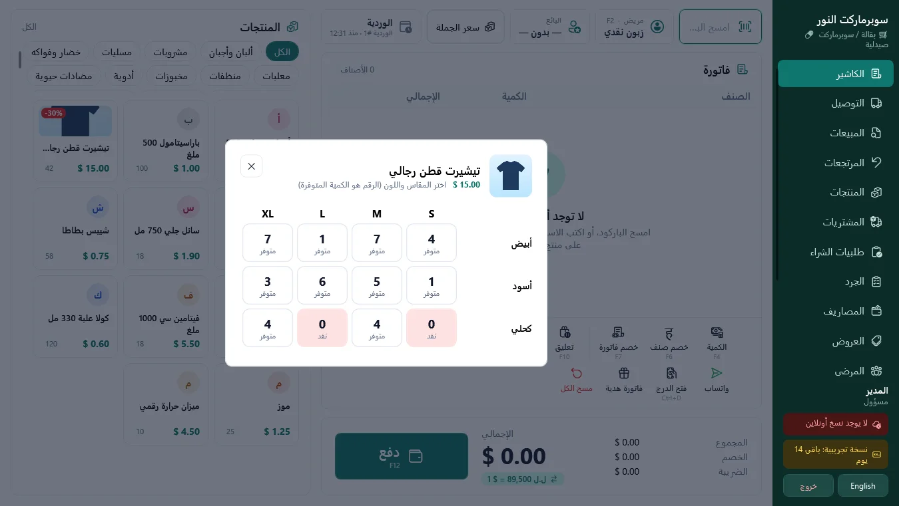
تبيع بالدولار والليرة على سعرك، وتحفظ دفتر الديون والمخزون، وتغلق كل وردية حتى آخر ليرة. على أي كمبيوتر ويندوز، مع إنترنت أو من دونه.
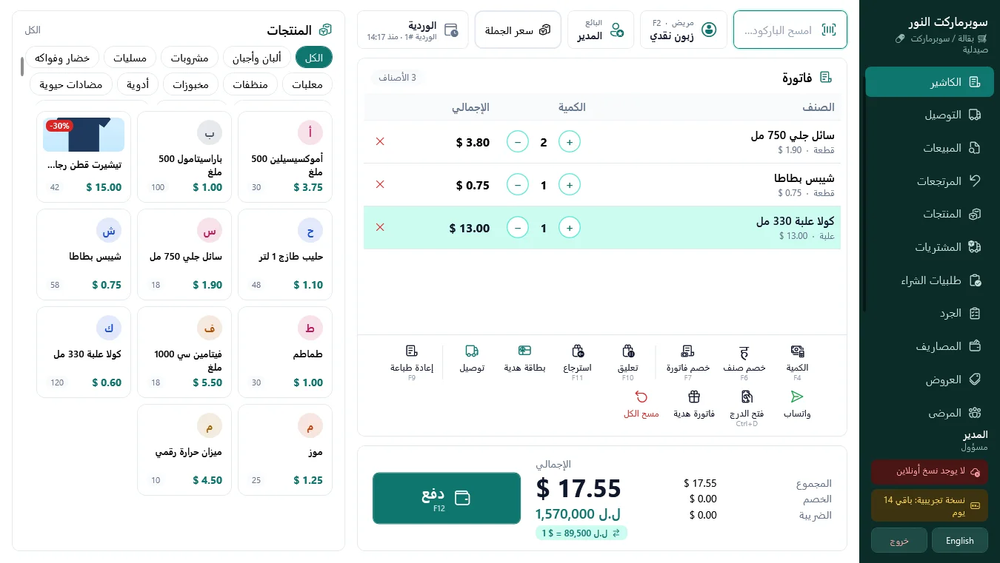
حدّد السعر مرة كل صباح. كل سعر وإجمالي وفاتورة يتبعه، بالدولار وبالليرة.
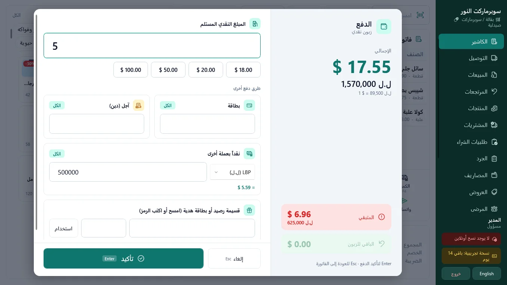
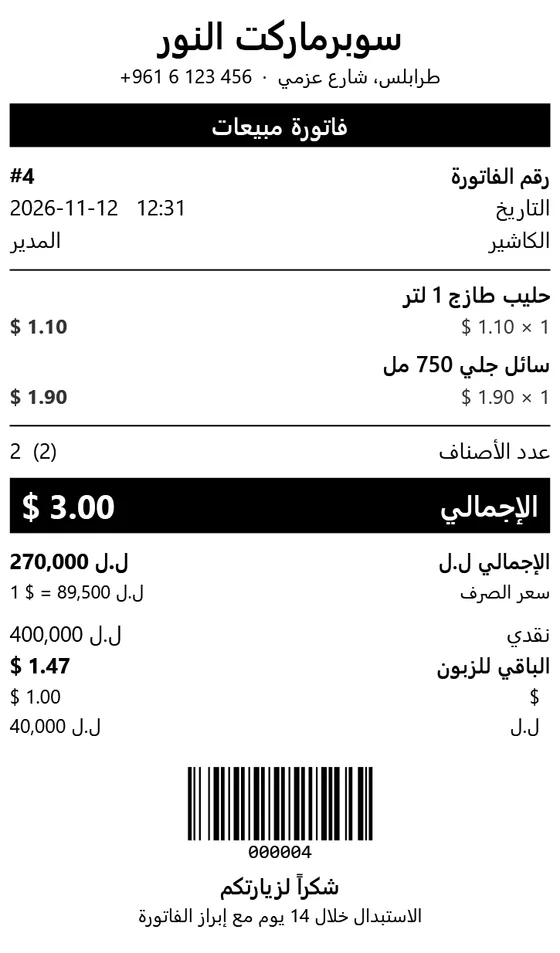
امسح أو اضغط أو ابحث. كل سطر بالدولار، والإجمالي بالدولار والليرة.

سجّل البيع على حساب الزبون وأرسل التذكير على واتساب بضغطة واحدة.
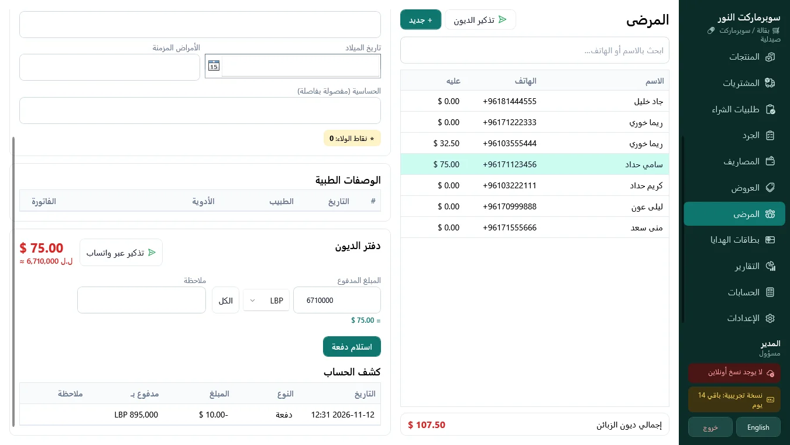
الباركود وملصقات الميزان والعلب تُنقص المخزون عند الكاشير. الأصناف القليلة تظهر قبل أن يفرغ الرف.
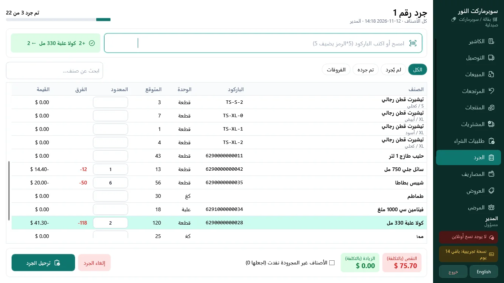
يعدّ الكاشير الدرج بالعملتين، وتقرير Z يُظهر أي فرق.
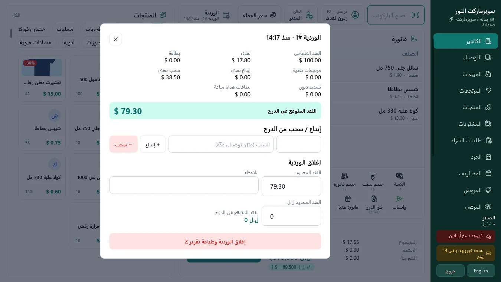
الربح شهراً بشهر بعد الإيجار والرواتب وفاتورة المولّد. احفظ السنة في Excel.
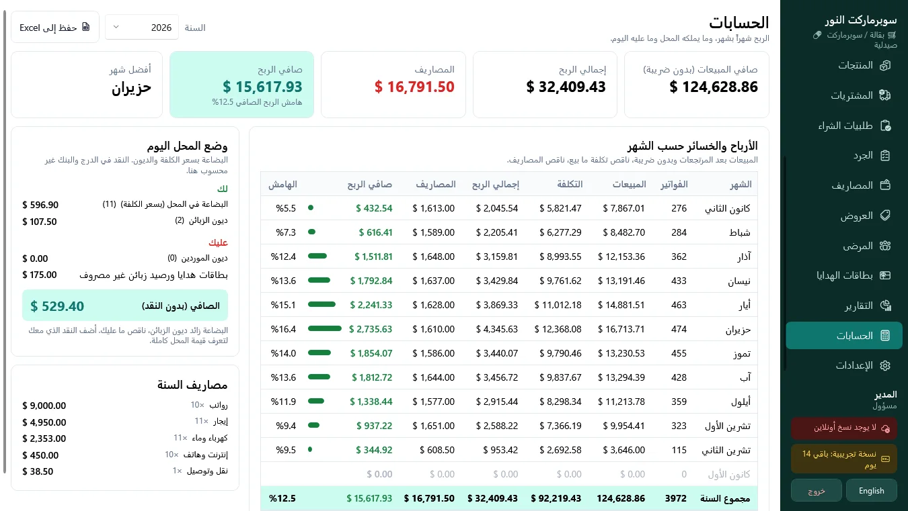
اختر لون علامتك، وخلفية فاتحة أو دافئة أو بيضاء أو داكنة، وشكل القائمة الجانبية أثناء التثبيت. ارفع شعارك فيظهر على الكاشير وشاشة الدخول وشاشة الزبون وعلى كل فاتورة.
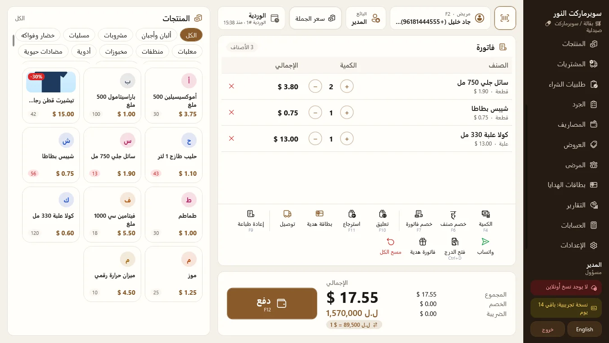
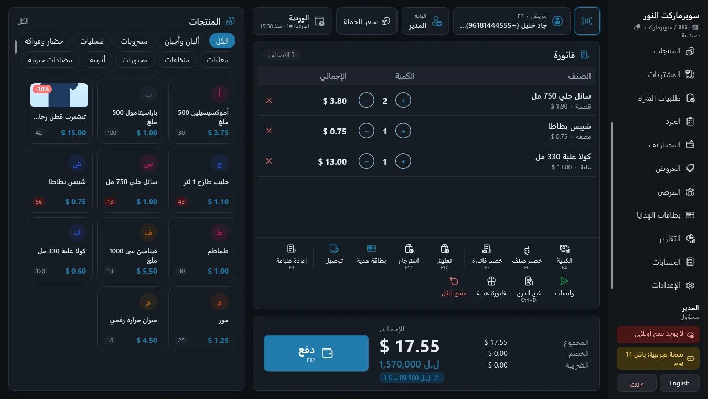
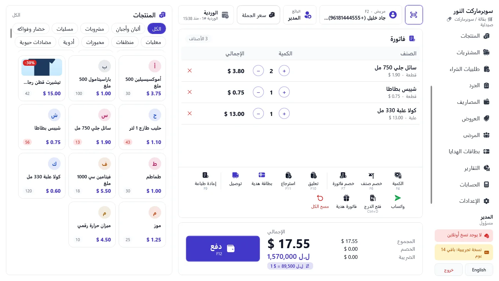
ستة تصاميم جاهزة للفاتورة على ورق 80 أو 58 مم. ثم غيّر أي سطر في مصمّم الفاتورة وشاهد الفاتورة تتغيّر بجانبه.
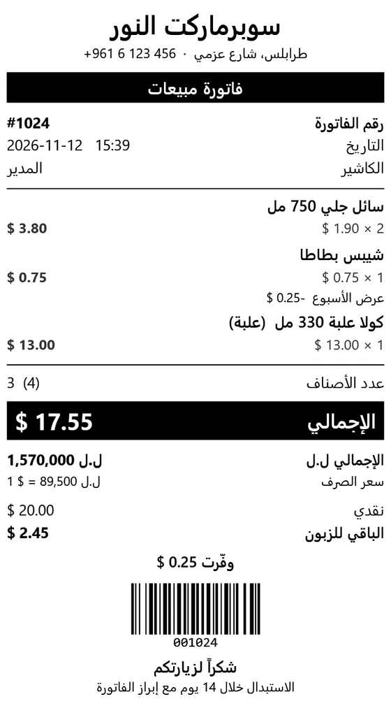
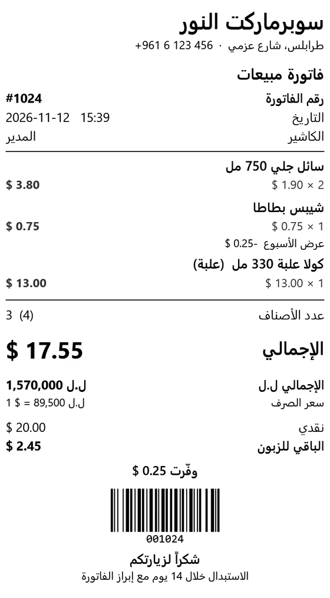
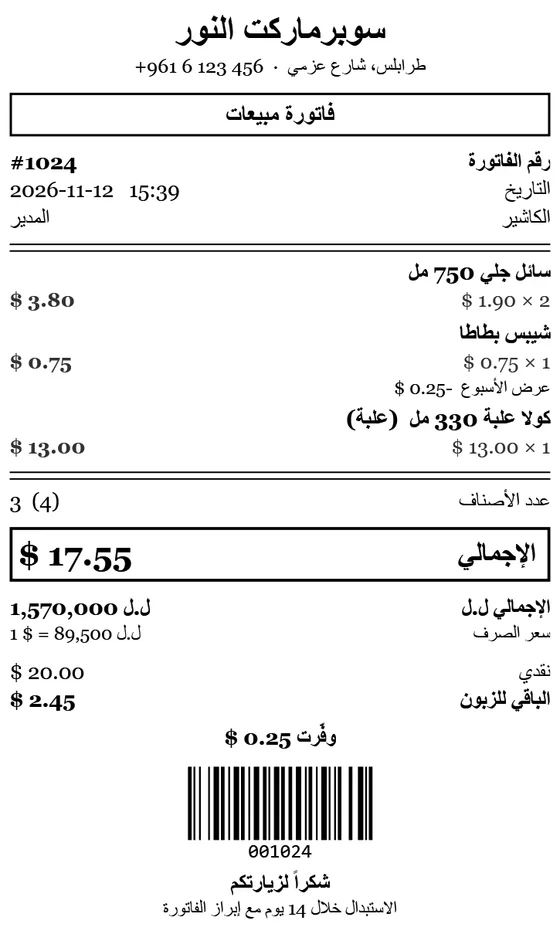
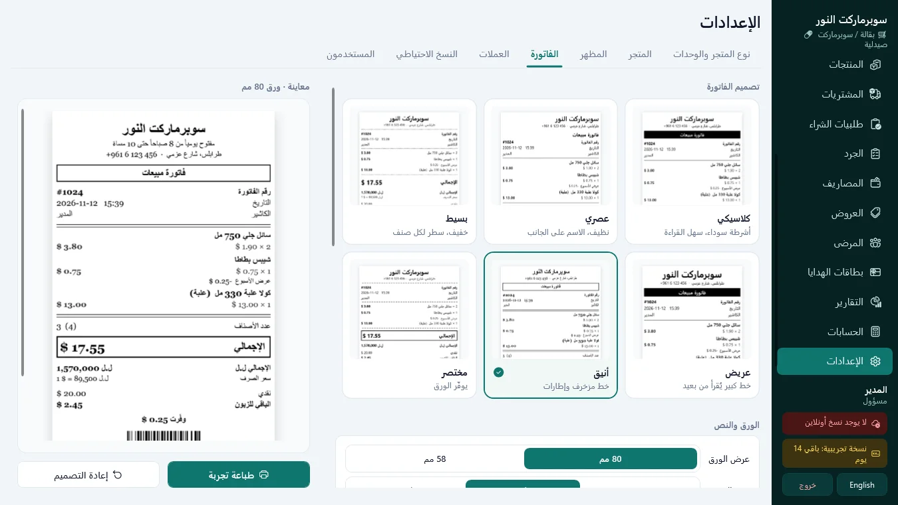
كل نوع محل يشغّل الأدوات التي يحتاجها عند التثبيت.
العنوان والأجرة والسائق على كل طلب، وورقة مطبوعة للكيس.
بِعها بالدولار، واصرفها على عدة زيارات، واعرف الرصيد متى شئت.
اطبع ملصقات الرفوف، واقرأ باركود الميزان، وبِع بالعلبة أو بالحبة.
كل كاشير يدخل برمزه. الخصومات والمرتجعات تحتاج موافقة المدير.
نسخة من المحل تذهب إلى OneDrive أو Google Drive أو Dropbox كل يوم.
النسخ الجديدة تصل داخل البرنامج، وبياناتك تبقى مكانها.
غيّر اللغة من القائمة الجانبية، في أي وقت، لكل كاشير.
المبيعات والمخزون والتقارير على الكمبيوتر. لا إنترنت؟ لا مشكلة.
الفواتير والتذكيرات تفتح في واتساب جاهزة للإرسال. المنتجات تدخل من Excel. ونسخة من المحل تذهب إلى مجلدك السحابي.
سؤال آخر؟ راسلنا
لا. المبيعات والمخزون والتقارير تعمل على الكمبيوتر. الإنترنت فقط للتحديثات وللنسخة اليومية إلى مجلدك السحابي.
كمبيوتر ويندوز 10 أو 11 بنظام 64 بت. أي طابعة فواتير أو قارئ باركود أو درج نقود يعمل مع ويندوز يعمل مع نقطة.
ليس بعد. كل محل يشغّل نسخته الخاصة من نقطة على كمبيوتره.
يتوقف البيع حتى تضيف مفتاح الترخيص. منتجاتك وزبائنك وتقاريرك ونسخك الاحتياطية تبقى وتفتح.
نعم. ارفعه أثناء التثبيت أو لاحقاً من الإعدادات، المظهر. يُطبع في أعلى كل فاتورة، ويمكنك إيقاف ذلك.
راسلنا بنوع محلك وعدد أجهزة الكمبيوتر التي تبيع منها، ونرد عليك بالسعر.
ملف تثبيت واحد لويندوز 10 و11. بلا بطاقة، بلا حساب، بالعربي والإنجليزي.